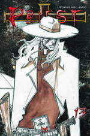

Forums galactiques > Assemblée Galactique : diplomatie officielle > désastre....
Pages : 1 2
| Hephaïstos Respect diplomatique : 44  15/02 ETU 23:35 | Score : 0 Détails Titan,
Je ne sais si vous avez lu le message d'AH, mais il a utilisé le terme de fantôme.. Or une chasse à l'homme contre un fantôme est difficilement concevable. Je pense que vous pouvez chasser oui , mais vous chasserez les mouches alors. ^^ | ||
| Delenn Respect diplomatique : 114  15/02 ETU 23:39 | Score : 1 Détails Je me rends compte que les univers changent mais pas ceux qui les hantent.
Quoi qu'il arrive, ils pourrissent le plaisir des autres. Que leur vie doit être bien vide. | ||
| titan14 Respect diplomatique : 187  16/02 ETU 02:11 | Score : 0 Détails Cher Héphaistos et néanmoins jeune commndant
Goldstein n'est pas un fantôme et il existe vraiment car très actif avec des points d'appui J'ai horreur de l'inactivité et de chasser les mouches Par contre, il me semble que sur ce coup là, vous avez quelque peu ................bailler aux corneilles Sans rancune | ||
| Hephaïstos Respect diplomatique : 44 16/02 ETU 12:17 | Score : 0 Détails Il ya donc contradiction entre vos paroles et celle de AH. L'un nous parle de fantome, l'autre de membre actif.
Enfin je suis probablement trop jeune pour comprendre... Amicalement | ||
| AlphonseHubert Respect diplomatique : 690  16/02 ETU 12:34  | Score : 0 Détails Fantôme actif : il exploite une faille de l'Univers permettant d'acheter et de bombarder sans aucune existence.
Signe de courage, tout ça... | ||
| vladok Respect diplomatique : 255  16/02 ETU 12:45 | Score : 0 Détails AlphonseHubert, est-ce bien raisonnable de le décrire en ces termes alors qu'il a proposé une trêve et qu'il est en ce moment même en train de négocier avec vous ?
| ||
| AlphonseHubert Respect diplomatique : 690 16/02 ETU 12:54 | Score : 1 Détails Allez voir les négociations : il propose que l'AST évacue 120 systèmes et donne sa caisse à dieu...
Il ne veut visiblement pas de la paix. | ||
| Shoubenigourath Respect diplomatique : 119  16/02 ETU 12:56 | Score : -1 Détails Non, c'est faux Alphonse Hubert. Je fait aussi partie de la réunion et Golstein n'a jamais demandé ça. Et je me permettrais de rappeller que pour l'instant, vous n'avez fait aucune remarque constructive, ici ou a la réunion, vous contentant de blague.
PS : je n'ai fait que rappeller la vérité. Valait-elle un hors sujet ? Je ne le pense pas. | ||
| AlphonseHubert Respect diplomatique : 690 16/02 ETU 13:03 | Score : 2 Détails Message de golstein le 16/02 ETU à 06:47, sur la coalition de médiation.
"L'Empire Ultrème demande que l'AST cède les systèmes de 1 à 120, et que Mac Polar II donne son argent à Dieu. En échange les populations civiles seront préservées et les commandants de l'AST pourront vivre en paix dans les systèmes plus lointains." | ||
| Shoubenigourath Respect diplomatique : 119 16/02 ETU 13:13 | Score : 1 Détails "Allez voir les négociations : il propose que l'AST évacue 120 systèmes et donne sa caisse à dieu..."
""L'Empire Ultrème demande que l'AST cède les systèmes de 1 à 120, et que Mac Polar II donne son argent à Dieu." Voyez les différences et voyez le mensonge. | ||
| vladok Respect diplomatique : 255 16/02 ETU 14:00 | Score : 0 Détails Cher AlphonseHubert, c'est cela qu'on appelle des négociations.
Si ces requêtes peuvent stopper la guerre, n'êtes vous pas en droit d'accepter ces réquêtes ? Vous qui prônez la paix, la démocratie ainsi que d'autres concepts qui m'échappent encore, on vous propose tout cela !!! Donc, n'allez pas dire que nous mettons de la mauvaise volonté. Cordialement, Vladok | ||
| AlphonseHubert Respect diplomatique : 690 16/02 ETU 14:02 | Score : 6 Détails Vladok, les négociations se poursuivent là où elles doivent se poursuivre.
Cependant, vous comprenez que ces négociations doivent aller dans les deux sens, et que chacun doit faire des concessions. Il est bien entendu hors de question que l'AST accepte sa dissolution, fut-ce en échange du sourire d'Ultremis. | ||
| vladok Respect diplomatique : 255 16/02 ETU 14:10 | Score : 2 Détails AlphonseHubert, je comprends bien l'impatience qui vous submerge dans votre derniere intervention.
Mais, dans un soucis de non-ingerence dans les négociations en cours, (puisque je ne siège pas à la table des négociations), je m'abstiendrai de toute remarque visant à discréditer toute initiative venant de l'un ou de l'autre des partis en présence car je pense que pour faire avancer les choses, il faut parfois savoir se taire. Ainsi, je n'évoquerai plus ce sujet à moins d'avoir des nouvelles plus avancées. cordialement, Vladok | ||
| titan14 Respect diplomatique : 187 16/02 ETU 17:31 | Score : 0 Détails Comment peut on m'expliquer que Goldstein siège à une table de négociation et atomise en même temps un tas de systèmes
Qui peut soutenir une telle méthode de négociation ? Qui peut croire en sa bonne foi ? ? ? ? ? ? ? je trouve cette attitude vil et fourbe | ||
| Delenn Respect diplomatique : 114 17/02 ETU 00:13 | Score : 7 Détails Réponse faite à Vladok qui telle la vermine, pourrit le système ou quelques "insignifiantes" créatures tentent de se développer calmement :
"Je n'ai pas l'habitude d'insulter les personnes, même les plus insignifiantes qui soient. Cependant, vous avez mérité cet insigne honneur. Vous êtes apparu, ronflant d'orgueil devant nous. Nous avez vanté la diplomatie de votre foi. Je ne pense pas y avoir cru un seul instant. C'est comme de laisser entrer le loup dans la bergerie. Vous vous comportez comme la racaille qu'on imagine. Au moins vous ne faites pas défaut à ce sentiment. La confiance est une chose qu'il n'est pas possible de vous accorder. Cet univers en est encore à sa puberté. Et les ultrèmes en sont l'acné..." Cordialement. J'avais fondé de réels espoir sur cet univers... Dommage. Donnez leur le petit doigt et ils vous mangeront le bras. Que ceux qui croient en leur parole creusent leur tombe. Car le couteau est plus facile à enfoncer dans le dos. | ||
| futursp Respect diplomatique : 3  17/02 ETU 16:09 | Score : -3 Détails bravo pour ce message !
| ||
| vladok Respect diplomatique : 255 17/02 ETU 17:46 | Score : 0 Détails Je m'adresse à l'Assemblée pour vous dire que le conflit entre le commandant Delenn et moi ne regarde que NOUS.
Nous n'allons plus nous abaisser à traiter de cela en public comme bon nombre de commandants, et je le regrette, le font devant cette noble Assemblée. Car l'Assemblée, je l'espère, sert à évoquer des sujets bien plus importants que ceux-là. Donc, je le répéte, ceci est une affaire privée entre ce commandant et moi. Merci pour votre attention. Vladok | ||
| Delenn Respect diplomatique : 114 17/02 ETU 18:10 | Score : 1 Détails J'avoue m'être emportée un peu vite.
Mais après tout, la réalité a toujours attiré les foules. De me défendre, j'avoue ne pas être capable. Je m'accroche plus au fonctionnement relationnel qu'au fonctionnement technique. J'en découvre les facettes de façon brutale. J'ai commis une erreur grossière : penser que l'appétit des autres s'arrêterait à la frontière de mon système. Vous l'avez entendu, je suis maintenant rassurée, je ne nagerai pas dans le bonheur d'un univers paradisiaque. Que s'est il passé ? Je fus effrayée telle le chaperon rouge devant le loup ultrémiste. Une fillette qui n'est finalement pas si tolérante que cela. | ||
| Ivan Issac Respect diplomatique : -6  17/02 ETU 18:35 | Score : 0 Détails Erreur de ma part pardon.
|
Pages : 1 2
Forums galactiques > Assemblée Galactique : diplomatie officielle > désastre....